Learning Objectives After completing this chapter, you should be able to:
Identify the fundamental elements of a block diagram: blocks, summing junctions, and pick-off points
Reduce block diagrams to a single transfer function using series, parallel, and feedback rules
Apply Mason’s Gain Formula to find transfer functions from forward paths and loop gains
Derive the transfer function of a DC motor from its block diagram
Use superposition to analyse systems with multiple inputs (reference, disturbance, noise)
Implement block diagrams in MATLAB (series, feedback, connect) and Simulink
block diagrams represent interconnected subsystems visually and provide a systematic way to derive the overall transfer function. Once drawn, tools such as MATLAB and Simulink can simulate the system under different conditions.
In block diagrams, a subsystem with transfer function
\[Y(s) = G(s)U(s)\]
is represented by a rectangular block. The signal \(U(s)\) is the input to the block and \(Y(s)\) is the output.
A block diagram is composed of the following fundamental components:
Signal lines representing system variables.
System blocks representing transfer functions.
Summing junctions used to combine signals algebraically.
Pick-off (branch) points used to distribute a signal to multiple locations.
Figure 1.1 illustrates the basic building blocks used in block diagram representations.
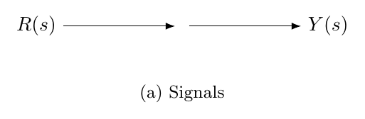
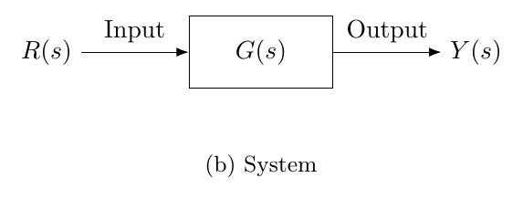
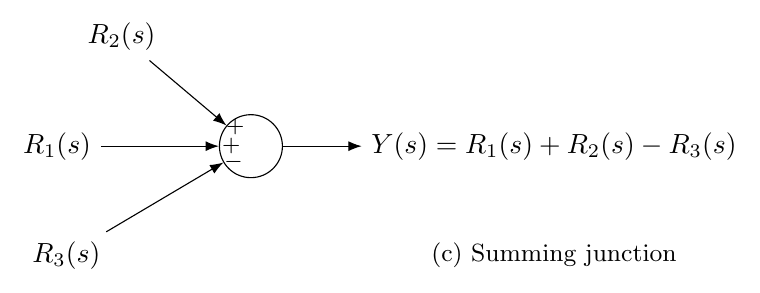
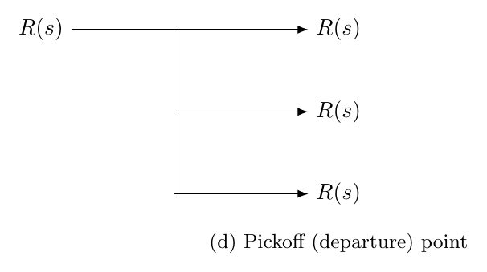
To determine the overall transfer function, a block diagram can be simplified using reduction rules.
block reduction is the process of simplifying a complex block diagram by systematically combining blocks into an equivalent single transfer function.
Common reduction techniques include:
Series connection
Parallel connection
Feedback connection
Moving blocks across summing junctions
The three most common reductions are \[G_{\mathrm{series}}(s)=G_1(s)G_2(s), \qquad G_{\mathrm{parallel}}(s)=G_1(s)+G_2(s),\] and \[G_{\mathrm{feedback}}(s) =\frac{G(s)}{1+G(s)H(s)} \quad \text{for negative feedback}.\] For positive feedback, the sign in the denominator changes: \[G_{\mathrm{feedback}}(s) =\frac{G(s)}{1-G(s)H(s)}.\]
These rules are shown in Figure 1.2.
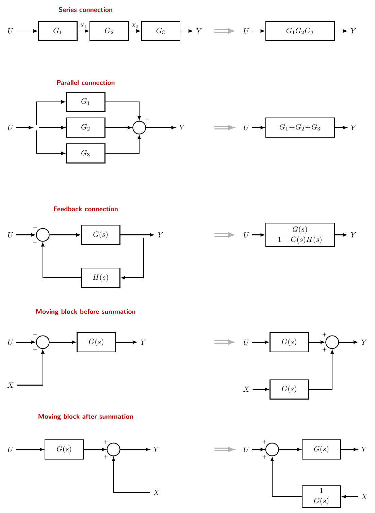
Question. Consider the block diagram below. Use block diagram reduction to find the closed-loop transfer function \[T(s)=\frac{C(s)}{R(s)}.\] Assume all blocks are proper transfer functions, and the summing junction signs are exactly as shown.
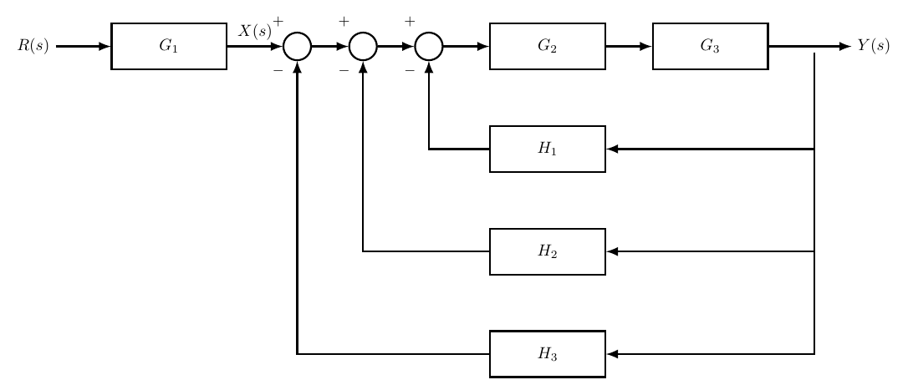
Step 1: Identify the forward path. From the summing junction output to the plant output, \[G(s)=G_2(s)\,G_3(s).\] The signal into the summing junction from the reference is \[X(s)=G_1(s)R(s).\]
Step 2: Combine the feedback paths into an equivalent feedback signal. All three feedback blocks sense the same output \(Y(s)\) and feed the summing junction in parallel (with signs). Thus the feedback contribution added at the summing node is \[\underbrace{\big(-H_1(s)Y(s)\big)}_{\text{negative input}} +\underbrace{\big(+H_2(s)Y(s)\big)}_{\text{positive input}} +\underbrace{\big(-H_3(s)Y(s)\big)}_{\text{negative input}}.\] So the summing junction output (call it \(E(s)\)) is \[E(s)=X(s)-H_1(s)Y(s)+H_2(s)Y(s)-H_3(s)Y(s) =X(s)+\Big(-H_1(s)+H_2(s)-H_3(s)\Big)Y(s).\]
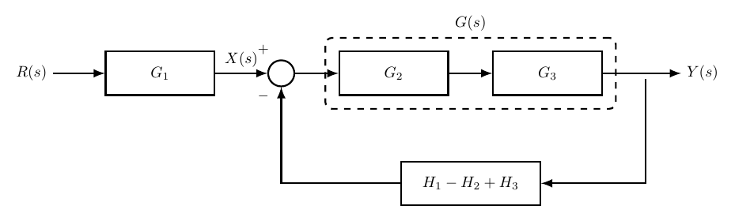
Step 3: Close the loop using the forward dynamics. Since \(Y(s)=G(s)E(s)=G_2(s)G_3(s)\,E(s)\), \[\begin{align*} Y(s) &=G_2(s)G_3(s)\Big[X(s)+\big(-H_1(s)+H_2(s)-H_3(s)\big)Y(s)\Big]\\ &=G_2(s)G_3(s)X(s)+G_2(s)G_3(s)\big(-H_1(s)+H_2(s)-H_3(s)\big)Y(s). \end{align*}\] Move all terms in \(Y(s)\) to the left: \[Y(s)\Big[1-G_2(s)G_3(s)\big(-H_1(s)+H_2(s)-H_3(s)\big)\Big] =G_2(s)G_3(s)X(s).\]
Step 4: Substitute \(X(s)=G_1(s)R(s)\) and simplify. Note that \[1-G_2G_3(-H_1+H_2-H_3)=1+G_2G_3(H_1-H_2+H_3).\] Therefore, \[\frac{Y(s)}{R(s)} =\frac{G_2(s)G_3(s)\,G_1(s)}{1+G_2(s)G_3(s)\Big(H_1(s)-H_2(s)+H_3(s)\Big)}.\]
A faster and more systematic alternative to manual reduction is based on identifying forward paths and loop gains. This approach uses mason, applied here directly to block diagrams without signal-flow graph notation.
A forward path is a path from the input to the output that does not pass through any node more than once. The gain of the \(k\)-th forward path is denoted by \(P_k(s)\).
A loop is a closed path that starts and ends at the same node without passing through any other node more than once. The loop gain \(L_m(s)\) is the product of all block gains and summing-junction signs around that loop.
For example, a negative feedback loop with forward path \(G(s)\) and feedback path \(H(s)\) has signed loop gain \[L(s)=-G(s)H(s).\] Mason’s Gain Formula gives the overall transfer function as \[T(s)=\frac{Y(s)}{U(s)} =\frac{\displaystyle\sum_{k=1}^{N_f}P_k(s)\Delta_k(s)}{\Delta(s)},\] where \[\Delta(s) =1-\sum L_m(s)+\sum L_i(s)L_j(s)-\sum L_i(s)L_j(s)L_k(s)+\cdots .\] The products in \(\Delta(s)\) are formed only from non-touching loops. The factor \(\Delta_k(s)\) is found from \(\Delta(s)\) after removing all loops that touch the \(k\)-th forward path. However, in this class, we will not use the full generality of Mason’s formula.
Two loops are said to touch if they have at least one common node. They are non-touching if they have no node in common. This distinction matters because non-touching loops can act independently, and their products must be included in \(\Delta(s)\). For two non-touching loops \(L_1(s)\) and \(L_2(s)\), \[\Delta(s)=1-\big(L_1(s)+L_2(s)\big)+L_1(s)L_2(s).\] The last term is present only because the two loops are non-touching.
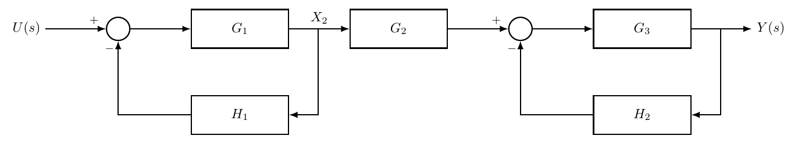
Question. For the block diagram in Figure 1.3, find the transfer function \[T(s)=\frac{Y(s)}{U(s)}\] using Mason’s Gain Formula.
Step 1: Identify the forward path. There is only one forward path from \(U(s)\) to \(Y(s)\): \[P_1(s)=G_1(s)G_2(s)G_3(s).\]
Step 2: Identify the loop gains. The first feedback loop contains \(G_1(s)\) and \(H_1(s)\). Since the feedback enters the summing junction with a negative sign, \[L_1(s)=-G_1(s)H_1(s).\] The second feedback loop contains \(G_3(s)\) and \(H_2(s)\), and it is also negative: \[L_2(s)=-G_3(s)H_2(s).\] These two loops are non-touching because they do not share any node.
Step 3: Form \(\Delta(s)\). Because \(L_1(s)\) and \(L_2(s)\) are non-touching, their product must be included: \[\begin{align*} \Delta(s) &=1-\big(L_1(s)+L_2(s)\big)+L_1(s)L_2(s)\\ &=1+G_1(s)H_1(s)+G_3(s)H_2(s) +G_1(s)G_3(s)H_1(s)H_2(s). \end{align*}\]
Step 4: Form \(\Delta_1(s)\). The forward path \(P_1(s)\) touches both loops, so both loops are removed when calculating \(\Delta_1(s)\). Therefore, \[\Delta_1(s)=1.\]
Step 5: Apply Mason’s formula. \[T(s)=\frac{P_1(s)\Delta_1(s)}{\Delta(s)}.\] Hence, \[\frac{Y(s)}{U(s)} = \frac{G_1(s)G_2(s)G_3(s)} {1+G_1(s)H_1(s)+G_3(s)H_2(s)+G_1(s)G_3(s)H_1(s)H_2(s)}\]
For many simple teaching examples, all loops touch each other and each loop touches every forward path. In that special case, \(\Delta_k(s)=1\) and \[T(s)=\frac{\sum P_k(s)}{1-\sum L_m(s)}.\] This is a useful shortcut, but it should not be used blindly when a diagram contains feedforward branches or non-touching loops.
Question. Consider the block diagram in the figure. Using the fast approach (forward paths + loop gains), find the transfer function \[T(s)=\frac{Y(s)}{U(s)}.\]
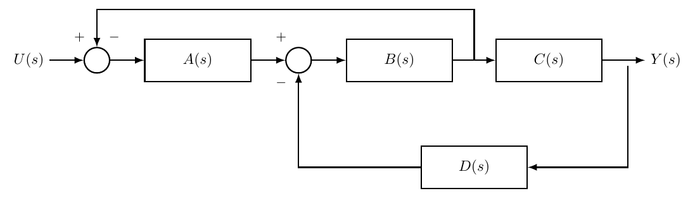
Step 1 — Forward paths (loops opened). Open all feedback connections conceptually. There is only one independent forward path from input to output: \[N_f = 1, \qquad P_1(s)=A(s)\,B(s)\,C(s).\]
Step 2 — Identify the feedback loops and their signed loop gains.
Loop 1 (upper loop, negative feedback at \(S_1\)): Traverse the loop starting at the signal after \(B\) and returning to \(S_1\): \[S_1 \;\rightarrow\; A(s)\;\rightarrow\; S_2 \;\rightarrow\; B(s)\;\rightarrow\; \text{(after $B$)} \;\rightarrow\; S_1.\] The feedback signal enters \(S_1\) with a negative sign. Hence the signed loop gain is \[L_1(s)=-A(s)\,B(s).\]
Loop 2 (lower loop, negative feedback at \(S_2\)): Traverse from \(S_2\) through the forward blocks to the output, then through \(D(s)\) back to \(S_2\): \[S_2 \;\rightarrow\; B(s)\;\rightarrow\; C(s)\;\rightarrow\; Y(s)\;\rightarrow\; D(s)\;\rightarrow\; S_2.\] The signal enters \(S_2\) with a negative sign, therefore \[L_2(s)=-B(s)\,C(s)\,D(s).\]
Step 3 — Check the shortcut condition. The two loops touch (they share nodes/blocks around \(S_2\) and \(B\)), so there are no non-touching loops. Both loops also touch the forward path, so \(\Delta_1(s)=1\). Mason’s formula reduces to \[T(s)=\frac{P_1(s)}{\Delta(s)}, \qquad \Delta(s)=1-\big(L_1(s)+L_2(s)\big).\]
Step 4 — Substitute. \[\begin{align*} T(s) &=\frac{A(s)B(s)C(s)} {1-\big[-A(s)B(s)-B(s)C(s)D(s)\big]}\\ &=\frac{A(s)B(s)C(s)} {1+A(s)B(s)+B(s)C(s)D(s)}. \end{align*}\]
Consider the block diagram shown in Figure 1.4. Using the direct method based on forward paths and loop gains, determine the overall transfer function
\[T(s)=\frac{Y(s)}{X(s)}.\]
All summing junction inputs are positive except those explicitly marked with a negative sign.
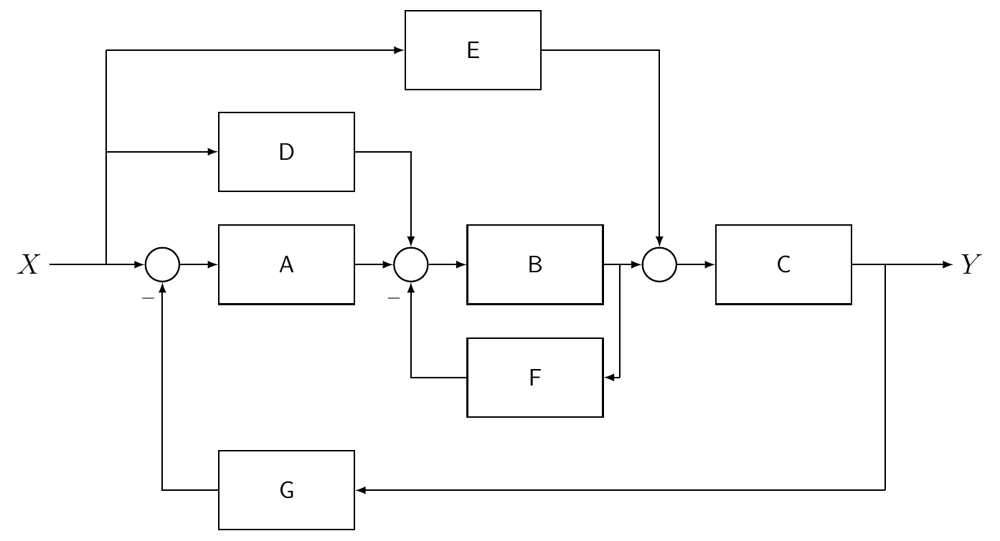
Step 1: Identify forward paths
When all feedback loops are opened, there are three independent forward paths from the input \(X(s)\) to the output \(Y(s)\): \[\begin{align*} P_1(s)&=A(s)B(s)C(s) \\ P_2(s)&=D(s)B(s)C(s) \\ P_3(s)&=E(s)C(s) \end{align*}\] Hence
\[N_f = 3\]
and
\[\sum_{k=1}^3 P_k(s) = A B C + D B C + E C\]
Step 2: Identify loop gains
There are two feedback loops.
Loop 1 (inner loop through \(F\))
Because this signal enters the lower input of the summing junction with a negative sign, \[L_1(s)=-B(s)F(s).\]
Loop 2 (global feedback through \(G\))
Traversing the loop through the lower feedback block gives
\[A(s)B(s)C(s)G(s)\]
Again the returned signal enters the summing junction with a negative sign, therefore
\[L_2(s)=-A(s)B(s)C(s)G(s).\]
The two loops touch because both contain block \(B(s)\). Therefore there are no products of non-touching loop gains in \(\Delta(s)\), and \[\Delta(s)=1-\big(L_1(s)+L_2(s)\big) =1+B(s)F(s)+A(s)B(s)C(s)G(s).\]
Step 3: Determine the path cofactors
The first two forward paths pass through block \(B(s)\), so they touch both loops: \[\Delta_1(s)=1, \qquad \Delta_2(s)=1.\] The third path \(P_3(s)=E(s)C(s)\) touches the global loop through \(G(s)\), but it does not touch the inner loop through \(F(s)\). Hence \[\Delta_3(s)=1-L_1(s)=1+B(s)F(s).\]
Step 4: Apply Mason’s formula
\[T(s)= \frac{P_1\Delta_1+P_2\Delta_2+P_3\Delta_3}{\Delta}.\] Therefore, \[T(s)= \frac{A B C + D B C + E C(1+B F)} {1 + B F + A B C G}\]
The DC motor model derived earlier can be represented as a block diagram by converting each governing equation into a block.
The electrical equation of the motor is
\[V_{in}(t)=L\frac{di}{dt}+Ri(t)+K_b\omega(t).\]
Taking the Laplace transform gives
\[I(s)=\frac{V_{in}(s)-K_b\Omega(s)}{Ls+R}.\]
The mechanical equation is
\[K_m i(t)=J\frac{d\omega}{dt}+b\omega(t)\]
which yields
\[\Omega(s)=\frac{K_m I(s)}{Js+b}.\]
Finally, the position is obtained from
\[\Theta(s)=\frac{\Omega(s)}{s}.\]
Combining these relations produces the block diagram shown in Figure 1.5.
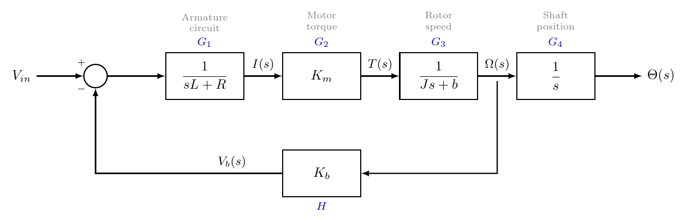
Consider the motor block diagram shown earlier.
Define the blocks
\[G_1(s)=\frac{1}{Ls+R}, \quad G_2(s)=K_m\]
\[G_3(s)=\frac{1}{Js+b}, \quad G_4(s)=\frac{1}{s}, \quad H(s)=K_b.\]
The transfer function from input voltage to motor speed is
\[\frac{\Omega(s)}{V_{in}(s)} =\frac{G_1G_2G_3}{1+G_1G_2G_3H}.\]
The position output is obtained by including the integrator
\[\frac{\Theta(s)}{V_{in}(s)} =\frac{G_1G_2G_3G_4}{1+G_1G_2G_3H}.\]
Substituting the transfer functions gives
\[\frac{\Omega(s)}{V_{in}(s)} = \frac{K_m}{(Ls+R)(Js+b)+K_bK_m}.\] The corresponding position transfer function is \[\frac{\Theta(s)}{V_{in}(s)} = \frac{K_m}{s\left[(Ls+R)(Js+b)+K_bK_m\right]}.\]
Since the motor diagram contains
one forward path
one feedback loop
the forward path from voltage to position is \[P_1(s)=G_1G_2G_3G_4.\] The back-emf loop is negative and returns from the speed signal, before the position integrator. Hence its signed loop gain is \[L_1(s)=-G_1G_2G_3H.\] Therefore,
\[G(s)= \frac{P_1(s)}{1-L_1(s)} = \frac{G_1G_2G_3G_4}{1+G_1G_2G_3H}.\]
A closed-loop system typically contains a reference input \(R(s)\), a disturbance \(D(s)\), and measurement noise \(N(s)\). Because these systems are linear, the effect of each input can be found separately and added by superposition.
Consider the standard negative-feedback system \[E(s)=R(s)-Y_m(s), \qquad Y_m(s)=Y(s)+N(s),\] with controller \(C(s)\), plant \(G_p(s)\), and a disturbance \(D(s)\) added at the plant input. Then \[Y(s)=G_p(s)\left[C(s)E(s)+D(s)\right].\] Substituting the feedback relation gives \[Y(s)=G_p\,C\big(R(s)-Y(s)-N(s)\big)+G_pD(s).\] Therefore, \[\big(1+C\,G_p\big)Y(s) =C\,G_pR(s)+G_pD(s)-C\,G_pN(s).\] The output can be written as \[Y(s) = \underbrace{\frac{C\,G_p}{1+C\,G_p}}_{\text{reference response}}R(s) + \underbrace{\frac{G_p}{1+C\,G_p}}_{\text{disturbance response}}D(s) - \underbrace{\frac{C\,G_p}{1+C\,G_p}}_{\text{noise response}}N(s).\]
When a block diagram has several independent inputs, set all other inputs to zero and calculate one transfer function at a time. The complete response is the sum of the individual responses.
In MATLAB, transfer functions can be combined using series, parallel, and feedback. In Simulink, the same model is built graphically using source blocks, transfer-function blocks, summing junctions, gain blocks, integrators, and scope blocks.
For the DC motor model, \[\frac{\Omega(s)}{V_{in}(s)} = \frac{K_m}{(Ls+R)(Js+b)+K_bK_m},\] the following MATLAB script creates the transfer function and plots the step response (Listing [lst:ch5_dc_motor_speed_sim]). The numerical values are typical Quanser SRV02 motor parameters.
MATLAB simulation of the DC motor speed response.
import matplotlib.pyplot as plt
import control as ctrl
s = ctrl.tf('s')
R = 2.6 # Armature resistance (ohm)
L = 0.18e-3 # Armature inductance (H)
J = 3.90e-7 # Motor rotor inertia (kg m**2)
b = 0 # Motor viscous friction neglected (N m s/rad)
Km = 7.68e-3 # Motor torque constant (N m/A)
Kb = 7.68e-3 # Back-emf constant (V s/rad)
Gspeed = Km/((L*s + R)*(J*s + b) + Kb*Km)
_resp = ctrl.step_response(Gspeed)
t, y = _resp.time, _resp.outputs
plt.plot(t, y)
plt.grid(True)
plt.title('DC motor speed response')
plt.xlabel('Time (s)')
plt.ylabel('Angular speed (rad/s)')
plt.show()s = tf('s');
R = 2.6; % Armature resistance (ohm)
L = 0.18e-3; % Armature inductance (H)
J = 3.90e-7; % Motor rotor inertia (kg m^2)
b = 0; % Motor viscous friction neglected (N m s/rad)
Km = 7.68e-3; % Motor torque constant (N m/A)
Kb = 7.68e-3; % Back-emf constant (V s/rad)
Gspeed = Km/((L*s + R)*(J*s + b) + Kb*Km);
step(Gspeed)
grid on
title('DC motor speed response')
xlabel('Time (s)')
ylabel('Angular speed (rad/s)')The same model can also be assembled from smaller blocks, as shown in Listing [lst:ch5_dc_motor_block_build]:
Constructing the DC motor block diagram in MATLAB.
import control as ctrl
import matplotlib.pyplot as plt
s = ctrl.tf('s')
R = 2.6 # Armature resistance (ohm)
L = 0.18e-3 # Armature inductance (H)
J = 3.90e-7 # Motor rotor inertia (kg m**2)
b = 0 # Motor viscous friction neglected (N m s/rad)
Km = 7.68e-3 # Motor torque constant (N m/A)
Kb = 7.68e-3 # Back-emf constant (V s/rad)
G1 = 1/(L*s + R) # Electrical dynamics
G2 = Km # Torque constant
G3 = 1/(J*s + b) # Mechanical dynamics
H = Kb # Back-emf feedback
Gspeed = ctrl.feedback(G1*G2*G3, H)
Gpos = Gspeed/s
print('Speed TF:')
print(Gspeed)
print('Position TF:')
print(Gpos)G1 = 1/(L*s + R); % Electrical dynamics
G2 = Km; % Torque constant
G3 = 1/(J*s + b); % Mechanical dynamics
H = Kb; % Back-emf feedback
Gspeed = feedback(G1*G2*G3, H);
Gpos = Gspeed/s;MATLAB verification of the transfer function in Figure 1.4 We now return to the block diagram in Figure 1.4. For that example, Mason’s formula gave \[T(s)= \frac{A B C + D B C + E C(1+B F)} {1+B F+A B C G}.\] The following two methods verify the same result using numerical transfer functions. The first method follows the equations of the diagram directly. This is often the clearest way to debug the calculation before building the same interconnection with named MATLAB signals.
Method 1: Verify from the signal equations (Listing [lst:ch5_verify_signal_eqs]).
Verification from the signal equations.
import control as ctrl
s = ctrl.tf('s')
# Example transfer functions
A0 = 1/(s + 1)
B0 = 2/(s + 2)
C0 = 3/(s + 3)
D0 = 1/(s + 4)
E0 = 2/(s + 5)
F0 = 1/(s + 6)
G0 = 1/(s + 7)
# Formula obtained using Mason's Gain Formula
# minreal() cancels common pole-zero factors to give a minimal realisation
T_mason = ctrl.minreal((A0*B0*C0 + D0*B0*C0 + E0*C0*(1 + B0*F0))
/ (1 + B0*F0 + A0*B0*C0*G0))
# Equation-based check:
# b = B0*(a + d - F0*b), so b/(a+d) = B0/(1+B0*F0)
B_inner = ctrl.feedback(B0, F0)
# y = C0*( B_inner*(A0*(x-G0*y) + D0*x) + E0*x )
# Therefore:
# y/x = (C0*B_inner*(A0+D0) + C0*E0)/(1 + C0*B_inner*A0*G0)
T_equations = ctrl.minreal((C0*B_inner*(A0 + D0) + C0*E0)
/ (1 + C0*B_inner*A0*G0))
# This should be close to zero
err1 = ctrl.minreal(T_equations - T_mason)
print('Mason TF:')
print(T_mason)
print('Equation-based TF:')
print(T_equations)
print('Error TF:')
print(err1)s = tf('s');
% Example transfer functions
A0 = 1/(s + 1);
B0 = 2/(s + 2);
C0 = 3/(s + 3);
D0 = 1/(s + 4);
E0 = 2/(s + 5);
F0 = 1/(s + 6);
G0 = 1/(s + 7);
% Formula obtained using Mason's Gain Formula
% minreal() cancels common pole-zero factors to give a minimal realisation
T_mason = minreal((A0*B0*C0 + D0*B0*C0 + E0*C0*(1 + B0*F0)) ...
/(1 + B0*F0 + A0*B0*C0*G0));
% Equation-based check:
% b = B0*(a + d - F0*b), so b/(a+d) = B0/(1+B0*F0)
B_inner = feedback(B0,F0);
% y = C0*( B_inner*(A0*(x-G0*y) + D0*x) + E0*x )
% Therefore:
% y/x = (C0*B_inner*(A0+D0) + C0*E0)/(1 + C0*B_inner*A0*G0)
T_equations = minreal((C0*B_inner*(A0 + D0) + C0*E0) ...
/(1 + C0*B_inner*A0*G0));
% This should be close to zero
err1 = minreal(tf(T_equations - T_mason),1e-7)Method 2: Build the interconnection using connect and sumblk (Listing [lst:ch5_verify_connect_sumblk]).
Verification using connect and sumblk.
import numpy as np
import matplotlib.pyplot as plt
import control as ctrl
s = ctrl.tf('s')
A0 = 1/(s + 1)
B0 = 2/(s + 2)
C0 = 3/(s + 3)
D0 = 1/(s + 4)
E0 = 2/(s + 5)
F0 = 1/(s + 6)
G0 = 1/(s + 7)
# Mason's gain formula result
T_mason = ctrl.minreal((A0*B0*C0 + D0*B0*C0 + E0*C0*(1 + B0*F0))
/ (1 + B0*F0 + A0*B0*C0*G0))
# Equation-based result
B_inner = ctrl.feedback(B0, F0)
T_connect = ctrl.minreal((C0*B_inner*(A0 + D0) + C0*E0)
/ (1 + C0*B_inner*A0*G0))
# Compare the two frequency responses
w = np.logspace(-2, 2, 200)
mag_m, phase_m, _ = ctrl.frequency_response(T_mason, w)
mag_c, phase_c, _ = ctrl.frequency_response(T_connect, w)
plt.figure()
plt.subplot(2, 1, 1)
plt.semilogx(w, 20*np.log10(np.abs(mag_m.flatten())), 'b', label='Mason formula')
plt.semilogx(w, 20*np.log10(np.abs(mag_c.flatten())), 'r--', label='Equation-based')
plt.ylabel('Magnitude (dB)')
plt.grid(True)
plt.legend()
plt.subplot(2, 1, 2)
plt.semilogx(w, np.degrees(np.angle(mag_m.flatten())), 'b')
plt.semilogx(w, np.degrees(np.angle(mag_c.flatten())), 'r--')
plt.ylabel('Phase (deg)')
plt.xlabel('Frequency (rad/s)')
plt.grid(True)
plt.tight_layout()
plt.show()
err_freq = mag_c.flatten() - mag_m.flatten()
max_freq_error = np.max(np.abs(err_freq))
print("Max frequency response error: %.2e" % max_freq_error)A = A0; A.InputName = 'e1'; A.OutputName = 'a';
B = B0; B.InputName = 'e2'; B.OutputName = 'b';
C = C0; C.InputName = 'e3'; C.OutputName = 'y';
D = D0; D.InputName = 'x'; D.OutputName = 'd';
E = E0; E.InputName = 'x'; E.OutputName = 'e';
F = F0; F.InputName = 'b'; F.OutputName = 'fb';
G = G0; G.InputName = 'y'; G.OutputName = 'gy';
% Summing junctions from the block diagram
S1 = sumblk('e1 = x - gy');
S2 = sumblk('e2 = a + d - fb');
S3 = sumblk('e3 = b + e');
T_connect = minreal(tf(connect(A,B,C,D,E,F,G,S1,S2,S3,'x','y')),1e-7);
% Compare the two frequency responses.
w = logspace(-2,2,200);
figure
bode(T_mason, 'b', T_connect, 'r--', w)
grid on
legend('Mason formula', 'MATLAB interconnection')
err_freq = squeeze(freqresp(T_connect - T_mason,w));
max_freq_error = max(abs(err_freq))If the calculation is correct, err1 should simplify to zero and the two Bode plots should overlap. For the numerical values used above, MATLAB gives approximately \[\texttt{max\_freq\_error}=3.9\times 10^{-9},\] which is small compared with the size of the frequency response.
Optional check: compare time responses (Listing [lst:ch5_verify_time_response]).
Verification by comparing time responses.
import numpy as np
import matplotlib.pyplot as plt
import control as ctrl
s = ctrl.tf('s')
A0 = 1/(s + 1)
B0 = 2/(s + 2)
C0 = 3/(s + 3)
D0 = 1/(s + 4)
E0 = 2/(s + 5)
F0 = 1/(s + 6)
G0 = 1/(s + 7)
T_mason = ctrl.minreal((A0*B0*C0 + D0*B0*C0 + E0*C0*(1 + B0*F0))
/ (1 + B0*F0 + A0*B0*C0*G0))
B_inner = ctrl.feedback(B0, F0)
T_connect = ctrl.minreal((C0*B_inner*(A0 + D0) + C0*E0)
/ (1 + C0*B_inner*A0*G0))
t = np.arange(0, 20.01, 0.01)
_resp = ctrl.step_response(T_mason, t)
t_m, y_mason = _resp.time, _resp.outputs
_resp = ctrl.step_response(T_connect, t)
t_c, y_connect = _resp.time, _resp.outputs
plt.plot(t_m, y_mason, 'b', label='Mason formula')
plt.plot(t_c, y_connect, 'r--', label='Equation-based')
plt.grid(True)
plt.legend()
plt.xlabel('Time (s)')
plt.ylabel('Output y(t)')
plt.show()
max_error = np.max(np.abs(y_mason - y_connect))
print("Max time-domain error: %.2e" % max_error)t = 0:0.01:20;
y_mason = step(T_mason, t);
y_connect = step(T_connect, t);
plot(t, y_mason, 'b', t, y_connect, 'r--', 'LineWidth', 1.5)
grid on
legend('Mason formula', 'MATLAB interconnection')
xlabel('Time (s)')
ylabel('Output y(t)')
max_error = max(abs(y_mason - y_connect))We now return to the DC motor model and implement the same speed block diagram in Simulink. Use the following procedure.
Open a new Simulink model.
Add a Step block to represent the input voltage \(V_{in}(t)\).
Add a Sum block with signs \(+\) and \(-\) to subtract the back-emf voltage \(K_b\omega(t)\).
Add a Transfer Fcn block with numerator \(1\) and denominator \([L\;\;R]\) to model \(1/(Ls+R)\).
Add a Gain block with gain \(K_m\) to convert current into torque.
Add a second Transfer Fcn block with numerator \(1\) and denominator \([J\;\;b]\) to model \(1/(Js+b)\).
Feed the speed output \(\omega(t)\) back through a Gain block with gain \(K_b\) to the negative input of the first summing junction.
Add a Scope block to display \(\omega(t)\). To obtain position \(\theta(t)\), add an Integrator block after the speed signal.
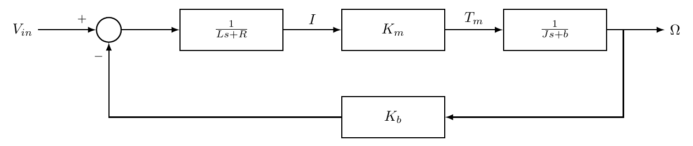
The Simulink diagram should match the mathematical block diagram. Each block represents one algebraic or dynamic relation, and each feedback signal must enter the correct sign of the summing junction.
Key Takeaways
A block diagram represents system relationships using blocks, summing junctions, and pick-off points.
Series blocks multiply, parallel blocks add, and feedback connections produce denominators of the form \(1\pm GH\).
Block diagram reduction must preserve the signs and locations of all feedback signals.
Mason’s Gain Formula computes transfer functions from forward paths and loop gains — non-touching loops contribute product terms in \(\Delta(s)\).
For multiple inputs, use superposition: find the transfer function from each input separately, then sum.
The DC motor block diagram couples electrical and mechanical dynamics with back-emf feedback.
MATLAB (feedback, connect, sumblk) and Simulink can implement and verify any block diagram.
Two blocks \(G_1(s)=\frac{2}{s+1}\) and \(G_2(s)=\frac{5}{s+3}\) are connected in series. Find the equivalent transfer function.
Two blocks \(G_1(s)=\frac{1}{s+2}\) and \(G_2(s)=\frac{3}{s+4}\) are connected in parallel. Find the equivalent transfer function.
A system has forward path \(G(s)=\frac{10}{s(s+2)}\) and unity negative feedback. Find the closed-loop transfer function.
Repeat Exercise 3 for positive feedback. Comment on the difference in the denominator.
For a negative-feedback system with controller \(C(s)\), plant \(G_p(s)\), and disturbance \(D(s)\) added at the plant input, derive \(Y(s)/D(s)\) when \(R(s)=0\).
A block diagram has one forward path \(P_1(s)=G_1G_2G_3\) and two touching negative feedback loops with unsigned gains \(G_1G_2H_1\) and \(G_2G_3H_2\). Use Mason’s formula to find \(Y(s)/R(s)\).
For the DC motor model, derive \(\Omega(s)/V_{in}(s)\) from the electrical and mechanical equations.
Using the DC motor parameters in the MATLAB listing, simulate the speed response and record the steady-state speed.
Draw the Simulink diagram for the DC motor position model \(\Theta(s)/V_{in}(s)\). Indicate where the additional integrator should be placed.
Explain why the sign of the back-emf feedback in a DC motor model is negative.